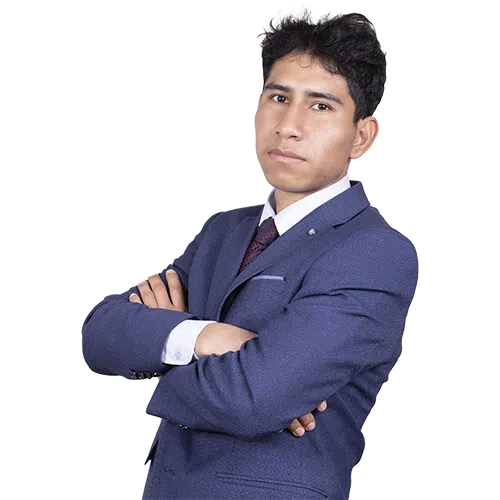

Estudiante comprometido con la innovación y el desarrollo estudiantil. Líder natural con visión de futuro, con una sólida disciplina de entrenamiento y un gran compromiso con el desarrollo del deporte en mi comunidad de Ingeniería de Sistemas.
Soy estudiante de Ingeniería de Sistemas en la UNSCH, deportista aficionado y practicante en las disciplinas de fútbol, futsal, voley, E-sports, basquet, boxeo, yu yitsu, kárate y medallista de oro activo en la UNSCH de las artes marciales en la disciplina de wushu, lleno de ganas de lograr más por nuestra escuela profesional. Con una sólida disciplina de entrenamiento y un gran compromiso con el desarrollo del deporte en mi comunidad de Ingeniería de Sistemas.
Durante los últimos años he desarrollado una trayectoria sólida como deportista en wushu, fútbol y futsal, donde aprendí la constancia, dedicación, trabajo en equipo y apoyo necesarios para alcanzar las metas.
Entrenamiento continuo y participación en eventos deportivos organizados por la UNSCH y otros externos, como la Copa Perú.
La experiencia en fútbol me ha permitido desarrollar habilidades técnicas, colectivas y personales.
Entrenamientos continuos de resistencia y fuerza para mejorar mi potencia, condicionamiento y condición física general.
Experiencia práctica con los retos comunes del proceso de crecimiento de un deportista.
Promoción del deporte en mi entorno y motivación a compañeros y amigos para iniciarse en actividades deportivas. Participación activa en sesiones grupales e individuales para entender el valor del trabajo en equipo y la confianza personal.
Trabajo en equipo y comunicación clara y efectiva.
Liderazgo positivo con capacidad para motivar e inspirar al equipo.
Estrategia, pensamiento rápido y toma de decisiones acertadas bajo presión.
Capacidad de planificación y orientación hacia metas a largo plazo.
Fomento y promoción constante de valores como responsabilidad, respeto y ética deportiva.
Mi visión como coordinador de deportes es transformar el área deportiva en un espacio de crecimiento, unión y excelencia, donde cada deportista sin importar el nivel que tengan, disciplina o experiencia tenga la oportunidad de desarrollarse plenamente.
Quiero lograr que nuestra comunidad deportiva sea organizada, motivadora, competitiva y llena de oportunidades reales para todos y que estos deportistas tengan el apoyo necesario para que se superen como deportistas y así puedan lograr llegar a grandes expectativas.